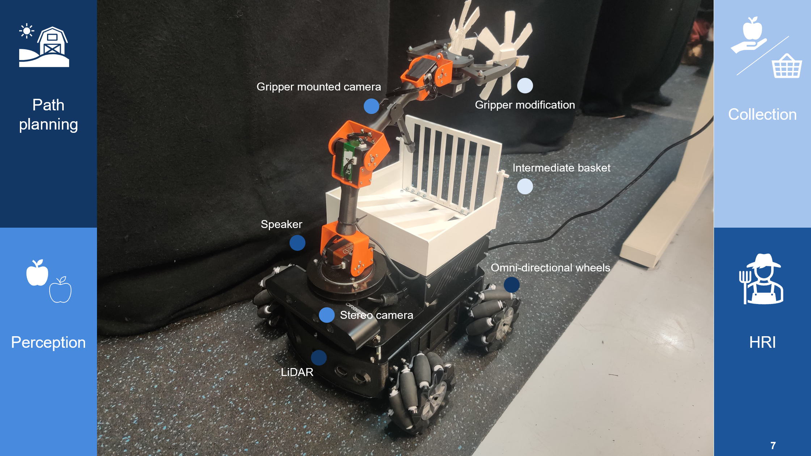

Project
ROS2 · MoveIt · 4-DOF Arm · Pick-and-Place
Apple orchad is facing industrial competition, worker shortage and intensive manual labor, while autonomous robot system is a good solution to help. Thus under the apple harvesting goal, we developed our solution upon MIRTE Master robot, which can roughly divided into 4 parts: Path planning in the orchad, apple perception, collection and feedback to the user.

The main challenge of this project is system engineering, i.e. how to coordinate different functionalities into the robot. Build upon ROS2, we used a Finite State Machine to decide which functional node to be used and which action to take.
The robot is able to navigate through the orchad, with collision avoidance. It uses Lidar and camera to get 3D position of the apple, and coordinate base and arm movement to collect. For easier usage, both visual and audio feedback is used to notify the user about the robot's state.